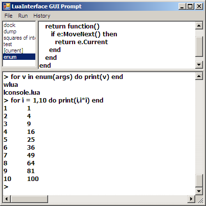
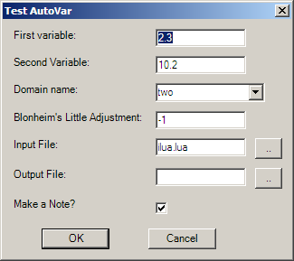

LuaInterface is a way for Lua programs to access the CLR (Common Language Runtime), otherwise known as .NET in the Windows world and Mono on Linux. (This version (1.5.3) can be accessed using the standard Lua binaries for Lua 5.1; there is a later version, but it has its own copy of Lua which is run in completely managed code.) You can also use LuaInterface to easily add Lua scripting abilities to C# programs, for instance, but that is outside the scope of this tutorial and is discussed fully in the LuaInterface documentation.
Here is a very simple program which uses the CLR classes to write out the value of the square root of two:
require 'luanet'
luanet.load_assembly "System"
Console = luanet.import_type "System.Console"
Math = luanet.import_type "System.Math"
Console.WriteLine("sqrt(2) is {0}",Math.Sqrt(2))
The first task for any LuaInterface program is to load any assemblies needed, and the second task is to import the types. In this case, the Console and Math classes are loaded explicitly, and we call their static methods WriteLine and Sqrt. LuaInterface will convert Lua numbers and strings into their .NET equivalents for us.
Like all hello programs, it is basically silly; the equivalent pure Lua program is of course just this one-liner:
print("sqrt(2) is "..math.sqrt(2))
But these techniques will be used to bring all the considerable power of the .NET framework into Lua programs, like the ability to easily write good-looking GUI applications, examine running processes, etc.
If you allow for the usual 'public static main' stuff, the equivalent C# program is also a one-liner, thanks to the using statement. This brings a whole namespace into global scope, so if there's a using System; at the top, then any member of that namespace becomes directly available. It would be very convenient to have this available for LuaInterface programs as well. It turns out that this is not difficult at all, using a short utility library:
require 'CLRPackage'
import "System"
Console.WriteLine("sqrt(2) is {0}",Math.Sqrt(2))
Here the import function works very much like C#'s using statement. This program brings in the System.IO namespace, so now useful things like Directory and Path effectively become global.
require 'CLRPackage'
import "System"
import "System.IO"
Console.WriteLine("we are at {0}",Directory.GetCurrentDirectory())
The power of interpreted languages is that they usually provide an interactive mode, where you can enter into a question-and-answer game with the system and explore the possibilities of libraries without having to write a host of little programs. Even if your main development language is C# or C++, having access to an interactive language like Lua is an excellent exploration tool. Since expressions are not statements in Lua, one has to use print to explicitly output expressions, or use the = shortcut:
C:\lang\lua\libraries\Built\console>lua
Lua 5.1.3 Copyright (C) 1994-2008 Lua.org, PUC-Rio
> require "CLRPackage"
> import "System"
> = Console
ProxyType(System.Console): 18643596
> = Environment.CurrentDirectory
C:\lang\lua\libraries\Built\console
Here we get a glimpse into the inner workings of LuaInterface; the actual type of Console is a proxy type which has the job of passing on Lua calls to the underlying .NET class.
A more convenient way to use Lua interactively is ilua; this does not require = and may appear more natural to people used to languages like Python. (If the default command-line irritates you, then run 'lconsole.wlua' for a proper GUI prompt.)
C:\lang\lua\libraries\Built\console>lua -lilua
ILUA: Lua 5.1.2 Copyright (C) 1994-2007 Lua.org, PUC-Rio
"quit" to end
> require 'CLRPackage'
true
> Console
ProxyType(System.Console): 18643596
> Console.WriteLine("Hello")
Hello
> import "System.IO"
{packageName='System.IO'}
> Directory
ProxyType(System.IO.Directory): 33574638
> dir = Directory.GetCurrentDirectory()
> dir
'C:\lang\lua\libraries\Built\console'
> Path.GetDirectoryName(dir)
'C:\lang\lua\libraries\Built'
> File.Exists "hello1.lua"
true
> File.Copy("hello1.lua","backup.lua")
> f = File.OpenText "hello1.lua"
> f:ReadLine()
'require 'luanet''
> f:Close()
> fsw = FileSystemWatcher(dir)
> fsw.Created:Add(print)
System.IO.FileSystemEventHandler: 17721300
> fsw.EnableRaisingEvents = true
> File.Copy("hello1.lua","new-hello.lua")
System.IO.FileSystemWatcher System.IO.FileSystemEventArg
>
As you can see, all that very useful functionality in the System.IO namespace is now available for us to browse and explore. Some of these have Lua equivalents, but usually require extra modules (e.g. lfs.currentdir() requires the binary extension lfs). Please note that, as usual, actual non-static methods in Lua are called with the : operator.
In some cases, like FileSystemWatcher, they aren't commonly available in Lua at all. This last example also shows how events can be defined in Lua code. It is this ability which makes Lua into a real .NET-capable language and not just an amusing .NET-aware desktop calculator. There is no += operator equivalent in Lua, so all exported events like Created export a sepcial method called Add which is passed any Lua function. Just using print shows us that the Created event passes us the object itself, plus a FileSystemEventArg object. But do note that we can make any function implement an event callback!
Array values are very common argument types, and are often returned by functions. LuaInterface provides a convenient index notation for accessing the values, but note that the index runs from zero to Length-1!
> args = Environment.GetCommandLineArgs()
> args.Length
2
> args[0]
'wlua'
> args[1]
'lconsole.lua'
Creating an array of strings is easy. Use the type name followed by the size in square brackets - this is consistent with the C# syntax.
> ss = String[3]
> ss[0] = "one"
> ss[1] = "two"
> ss[2] = "three"
However, note that you can only initialize values in this simple way if you are dealing with objects and not numbers. Then you have to use Array.SetValue explicitly.
> d = Double[4]
> d[0] = 1.0
System.InvalidCastException: Unable to cast object of type
'System.Double[]' to type 'System.Object[]'.
> d:SetValue(0,1.0)
There are no implicit conversions of Lua tables into .NET types, but it is easy to do manually. Here is a useful function for creating an array of doubles from a table:
function make_double_array (tbl)
local arr = Double[#tbl]
for i,v in ipairs(tbl) do
arr:SetValue(v,i-1)
end
return arr
end
Other collection types are treated similarly; generally, if the object is indexable, Lua will be able to index it naturally as well. Consider this Hashtable of all environment variables:
> vars = Environment.GetEnvironmentVariables()
> vars
System.Collections.Hashtable: 7284614
> vars.Count
35
> vars['SystemRoot']
'C:\WINDOWS'
> e = vars:GetEnumerator()
> e
System.Collections.Hashtable+HashtableEnumerator: 37564172
> e:MoveNext()
true
> e.Current
System.Collections.DictionaryEntry: 652891594
> de = _
> de.Key
'Path'
> de.Value
'C:\WINDOWS\system32;...
There is no direct support in Lua for enumerables, as there is in C# with the foreach statement, but it is not difficult to write a function that will allow us to iterate through any such collection using a Lua for statement:
function enum(o)
local e = o:GetEnumerator()
return function()
if e:MoveNext() then
return e.Current
end
end
end
> for v in enum(args) do print(v) end
wlua
lconsole.lua
There are some .NET methods which will throw exceptions on error. These are converted into regular Lua errors by LuaInterface, so you need to execute these methods in a protected call to avoid your program crashing. For instance, load_assembly usually loads assemblies from the Global Assembly Cache (GAC) but it will work with your own assemblies if you end them with an explicit '.dll'.
However, it will not load an assembly given an arbitrary path. This is not difficult to get around, but the function we need is one of those that throw exceptions. Consider this script:
-- load.lua
require "CLRPackage"
import "System.Reflection"
function get_assembly_name(name)
local res
local suc,err = pcall(function()
res = AssemblyName.GetAssemblyName(name)
end)
if suc then
return res
else
return nil,err
end
end
print(get_assembly_name(arg[1]))
GetAssemblyName returns an object which you can pass to Assembly.Load, but we have to call it using pcall. pcall will usually just return true, but if an error occured it returns false,error. In effect, this is Lua's try..catch mechanism.
C:\console\test>lua load.lua ..\CSML.dll
CSML, Version=1.0.0.0, Culture=neutral, PublicKeyToken=null: 3357463
C:\lang\lua\libraries\Built\console\test>lua load.lua ..\CSMLx.dll
nil System.IO.FileNotFoundException: Could not load file or ...
I have truncated the error message, but the exception type is the first part of this rather long error string!
Showing a form is very straightforward, once you have brought in the necessary assembly, and the Form type itself.
-- form1.wlua
require 'luanet'
luanet.load_assembly "System.Windows.Forms"
Form = luanet.import_type "System.Windows.Forms.Form"
form = Form()
form.Text = "Hello, World!"
form:ShowDialog()
Since this is a GUI script, I have given it a .wlua extension. The convention is that .lua is associated with the console version lua.exe, and .wlua is associated with the GUI version wlua.exe. Then, if you run this script from Windows Explorer you will not get the dreaded black console window appearing as well. (Also, in Lua for Windows .wlua scripts can be properly run and debugged from SciTE.)
Since explicitly bringing in all the required types can be tedious, I will now switch to using CLRPackage/import for the next example:
-- form2.wlua
require 'CLRPackage'
import "System.Windows.Forms"
import "System.Drawing"
form = Form()
form.Text = "Hello, World!"
button = Button()
button.Text = "Click Me!"
button.Location = Point(20,20)
button.Click:Add(function()
MessageBox.Show("We wuz clicked!",arg[0],MessageBoxButtons.OK)
end)
form.Controls:Add(button)
form:ShowDialog()
Windows.Forms applications are conceptually very simple; one creates controls of various types, sets their properties, and adds them to the control array of the form, which then can be shown. One attaches functions to the events of the objects to get feedback from the user or the system.
Unlike IUP, controls are usually given an explicit position. However, controls can be docked to the sides of their container:
-- form3.wlua
require 'CLRPackage'
import "System.Windows.Forms"
import "System.Drawing"
button = Button()
button.Text = "Click!"
button.Dock = DockStyle.Top
edit = RichTextBox()
edit.Dock = DockStyle.Fill
form = Form()
form.Text = "Hello, World!"
form.Controls:Add(edit)
form.Controls:Add(button)
form:ShowDialog()
In this example, a text box is made to fill all of the form, and then a button is added which is to be docked to the top side of the form. (The creation order of the text box and the button is not important, but they do have to be added in this order.)
The normal interactive Lua prompt does not play nicely with GUI applications, since these typically need to run an event loop. lconsole is an application written using LuaInterface that allows you to type in Lua expressions and statements in a purely GUI environment. Since the console window is based on a rich text box, all the usual clipboard operations are available, and the general black-on-white theme fits better with modern desktops. To run it, double click on 'lconsole.wlua'.

There are three parts to the lconsole window; the text pane, where you enter commands, the code pane, where you can enter little pieces of code, and the list down the side of the code pane, which shows the currently saved functions and snippets. The main reason for the code pane is that (like ilua as discussed above) one cannot enter multiline statements like a function definition; lconsole makes a virtue of this limitation, by automatically saving these little code snippets.
You can access the command history by using the Alt+UpArrow and Alt+DownArrow shortcuts.
The first point to note is that the console is very much inside the application. There is an app table which contains the code and text panes, the list box and the form itself.
ILUA: Lua 5.1.1 Copyright (C) 1994-2007 Lua.org, PUC-Rio
> app.code.Height
70
> app.form.Width
420
> app.form.Text = "My Console!"
(This makes lconsole a very easy application to customize. Tired of the background colour? Change it!)
To create a new function, execute the command fun(name):
> fun 'sqr'
and in the code pane appears:
function sqr()
end
which can be edited so:
function sqr(x)
return x*x
end
Hit F5 (or Run|Save and Go) to load it into the session. Note that a new item 'sqr' has appeared, and will persist into the next session, since it's actually saved as sqr.lua in your session directory. The code pane is not intended to be a real code editor, there's no attempt at syntax highlighting and the File|Load Lua.
It is very straightforward to bring in an image and put it inside a form using the PictureBox control:
> f = [[C:\Program Files\MP3 CD Converter\skins\jazz_folder.bmp]]
> im = Image.FromFile(f)
> im
System.Drawing.Bitmap: 50048984
> im.Width
150
> f = Form()
> pic = PictureBox()
> pic.Dock = DockStyle.Fill
> f.Controls:Add(pic)
> f:show()
method not found (or no indexer): show
> f:Show()
> pic.Image = im
> f.ClientSize = Size(im.Width,im.Height)
If you get bored typing something repeatedly, then a function is your friend. In this case I got bored adding dock styles, so:
function dock(c,s)
s = s or 'Fill'
c.Dock = DockStyle[s]
return c
end
Now it's possible to do this:
> f.Controls:Remove(pic) -- got bored of the picture!
> e = dock(ListBox())
> f.Controls:Add(e)
And indeed, a list box fills the form!
People new to Lua may find the first two lines of this little function a bit puzzling. The key to the first line is that the or operator works with any type, and returns the value used - it doesn't always return a boolean value, as in most languages. Values are considered false in Lua either if they have the value false or if they are nil, so if we don't pass a second argument to this function, it will be given the default value 'Fill'. The second line comes from the fact that a.x and a['x'] are completely equivalent; they are both table lookups (JavaScript works like this as well, and it is a very useful feature.)
The CLRForm module contains some very useful utilties for doing Windows Forms programming in Lua. lconsole is built using CLRForm, so all of these utilities can be tested in this environment.
A common need is to ask the user for a single string:
require "CLRForm"
if PromptForString("MyApp","Give your name","") then
MessageBox.Show("Name!",arg[0],MessageBoxButtons.OK)
end
People however get irritated by being asked tiny questions, so in true bureaucratic style we would like her to fill in a form. This is a very common thing in GUI applications, and generally requires far too much coding. Some of that coding may be generated by the wizards that lurk in your IDE, but sometimes the ideal amount of code is zero. Consider this:
-- auto1.wlua
require "CLRForm"
data = {
firstname = "",
lastname = "",
age = 0,
title = "",
phone = "",
email = ""
}
form = AutoVarDialog { Text = "Please Supply Details", Object = data;
"First Name:","firstname",
"Last Name:","lastname",
"Age:","age",
"Title:","title",
"Phone number:","phone",
"E-mail Address:","email"
}
if form:ShowDialogOK() then
print 'ok'
end
os.exit(0)
The call to AutoVarDialog automatically generates a dialog based on a template, which maps descriptive labels to the actual fieldnames. This kind of trick is possible in highly dynamic languages like Lua, where the actual type at runtime of any object is easy to determine. So by default we will try to edit numbers and strings with text boxes, and boolean values with checkboxes. At this level, some input validation is already possible; age was a number, so whatever gets typed into the 'Age:' box must be convertable to a number and the user will not be allowed to proceed successfully until this is fixed.
But the general problem of validation remains. It's a bad idea to let bogus data into your system, and it should be caught as soon as possible. Also, fields like 'Title' are profoundly confusing. People will put in what their interpretation tells them, rather than your interpretation. So the next example shows an extra (optional) validation field that can follow the field name:
-- auto1.wlua
require "CLRForm"
data = {
firstname = "steve",
lastname = "donovan",
age = 16,
title = "Mr",
phone = "+27116481212",
email = "steve.j.donovan@gmail.com"
}
form = AutoVarDialog { Text = "Please Supply Details", Object = data;
"First Name:","firstname",NonBlank,
"Last Name:","lastname",NonBlank,
"Age:","age",Range(16,120),
"Title:","title",{"Mr","Ms","Dr","Prof"},
"Phone number:","phone",Match ('^%+%d+$',"Not a valid phone no."),
"E-mail Address:","email",Match ("%S+@%S+","Not valid email")
}
if form:ShowDialogOK() then
print 'ok'
end
os.exit(0)
Notice that by making 'title' to be explicitly a list of items, we can now deduce that a drop-down list is the appropriate way to present the choice to the user. As for 'age', numerical values nearly always have a valid range. Text fields require more complicated validation - here phone numbers must be entered in international format, and email addresses must have a '@' somewhere. (They can still be utterly bogus, but at least they are well-formed rubbish ;))
Here is a more complete example, showing off file entry fields and booleans.
-- autoform.wlua
require "CLRForm"
tbl = {
x = 2.3,
y = 10.2,
z = "two",
t = -1.0,
file = "c:\\lang\\lua\\ilua.lua",
outfile = "",
res = true,
}
form = AutoVarDialog { Text = "Test AutoVar", Object = tbl;
"First variable:","x", Range(0,4),
"Second Variable:","y",
"Domain name:","z", {"one","two","three"; Editable=true},
"Blonheim's Little Adjustment:","t",
"Input File:","file",FileIn "Lua (*.lua)|C# (*.cs)",
"Output File:","outfile",FileOut "Text (*.txt)",
"Make a Note?","res",
}
if form:ShowDialogOK() then
print(tbl.x,tbl.z,tbl.res,tbl.file)
end

Generally, Windows Forms controls are positioned absolutely within their parent control. Other frameworks use explicit layout strategies, which can be very useful. For instance, the AutoVarDialog form uses automatic control layout. CLRForm defines a useful StreamLayout class, which works rather like writing to a file; each new control is placed after the last, until there's an explicit request for a 'new line'.
This example attaches a rough-and-ready toolbar to a form. A Panel control is a useful tool in composing forms; by default it does not have a border. It is easy to attach it to the top of the form with DockStyle.Top. The StreamLayout is used to put the controls in a nice row:
-- layout1.wlua
require 'CLRForm'
panel = Panel()
layout = StreamLayout(panel)
b = Button()
b.Text = "One"
layout:Add(b)
b = Button()
b.Text = "Two"
layout:Add(b)
t = TextBox()
layout:Add(t)
layout:Finish()
form = Form()
form.Text = "Hello, World!"
panel.Dock = DockStyle.Top
form.Controls:Add(panel)
form:ShowDialog()
Object-oriented style is particularly appropriate for GUI applications. Although Lua does not have a formal concept of 'class', it is not difficult to add a class mechanism. Then our forms can be self-contained objects, as is obligatory in C#. The classes described here are not proper derived classes of the .NET Form class, rather they use delegation; if our form object cannot find a method or property within itself, it calls the delegate object, which is a Form object.
-- menuform.lua
require "CLRForm"
MenuForm = class()
function MenuForm:_init ()
self.form = Form()
self.name = "Dolly"
-- this method can only be called once we've set up our own fields!
self:delegate(self.form)
self.Text = "A Simple Form Class"
self.FormBorderStyle = FormBorderStyle.FixedDialog
self.MaximizeBox = false
self.MinimizeBox = false
self.ContextMenu = popup_menu {
"First",method(self,self.first),
"Second",method(self,self.second),
}
end
function MenuForm:first()
local name = PromptForString(arg[0],"Give the dog a name",self. name)
if name then self.name = name end
end
function MenuForm:second()
ShowMessageBox (self.name)
end
form = MenuForm()
form:ShowDialog()
Notice the useful popup_menu function, which takes some of the tedium out of defining menus. (A more complete example can be found in the source for lconsole.lua, where shortcuts are defined, etc.) The little function method has a simple definition; it creates a callback function which actually does the function call, passing the object as the first parameter (the self object):
function method (obj,fun)
return function()
fun(obj)
end
end
Main menus are also easy to construct; here is how lconsole.wlua does its menu:
local menu = main_menu {
"File",{
"Load Lua(CtrlO)",load_lua,
"Save Session(CtrlS)",save_session,
"Save As Text",save_text,
"E&xit(CtrlX)",function() os.exit(0) end,
},
"Run",{
"Save and Go(F5)",save_and_go,
"Create Function",function() fun() end,
"Delete Item",delete_list_item,
"Clear Code Pane",clear_code,
},
"History", {
"Last(AltUpArrow)", function() get_history(true) end,
"Previous(AltDownArrow)", function() get_history(false) end
}
}
If an item string contains '(...)', then it's interpreted as a name from the System.Windows.Forms.Shortcut enumeration; see the .NET documentation for all available constants.
LuaForm makes creating form objects easier. You feed LuaForm wiith a table; the array-like part of the table contains the controls, and the map-like part contains any properties you wish to assign to the control. If there is only one control to be added, then it's assumed that we want it to fill the whole client area of the form.
> txt = RichTextBox()
> f = LuaForm{txt;Text="hello"}
> f:Show()
If multiple controls are added, then one can provide their dock styles:
> txt = RichTextBox()
> list = ListBox()
> f = LuaForm{'Fill',txt,'Left',list; Text = "Test!"}
> f:Show()